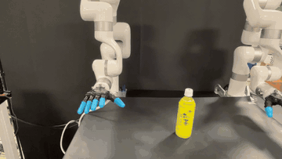
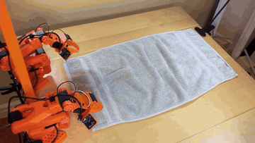
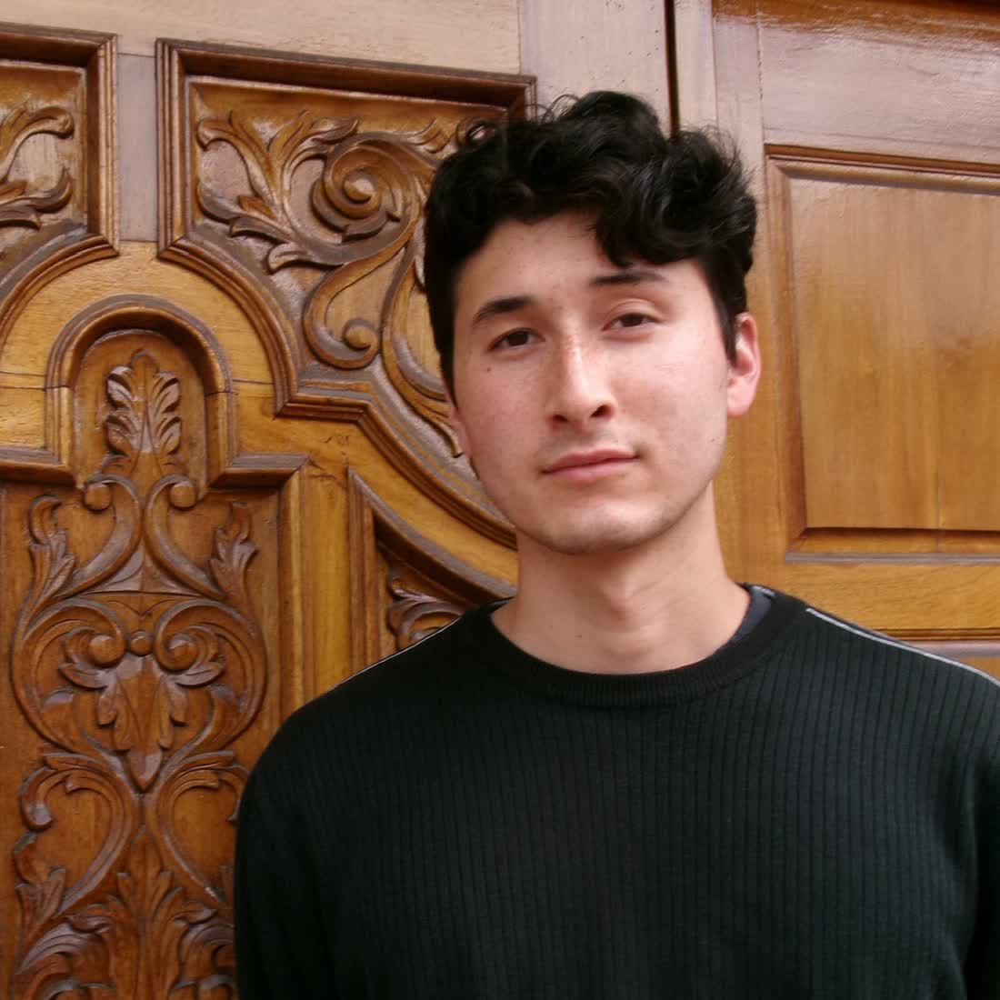

I'm currently a robotics research intern at Amazon's Industrial Robotics Group and a graduate student in the CSE department at UCSD, researching generalizable manipulation in Xiaolong Wang's Lab.
I was previously a software engineer for the Powertrain Data and Automation Team at Lucid Motors. I completed my B.S. at UCLA, where I worked on surgical robotics research in the Mechatronics and Controls Lab advised by Dr. Matthew Gerber and Prof. Tsu-Chin Tsao.

